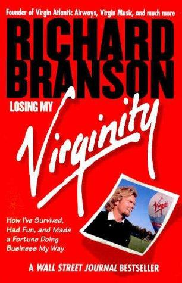

Why Did Virgin Cola Fail?
Drove a Tank Through Times Square to Beat Coke, and Coke Didn't Even Flinch
📜 What Happened
In 1994 Richard Branson launched Virgin Cola with the house style: cheeky name, cheekier advertising, and real distribution ambition through Cott Corp's bottling muscle. It worked at the margins, briefly: in UK supermarkets the brand outran expectations and for a moment even outsold Pepsi on grocery shelves, and Branson celebrated by driving a tank through Times Square in 1998, crushing a fake Coke wall. Then the incumbent's machine did what incumbents' machines do. Coca-Cola's contracts owned the fountains, the fridge space and the supermarket eye-level; retailers were offered terms that made stocking the upstart expensive; the US launch ran into a distribution wall no stunt could climb. Virgin Cola had celebrity, taste-test wins and column inches, but cola is a logistics and shelf-real-estate war, and Virgin had rented ambition without owned ground. UK production ended in 2001, the brand faded worldwide by the mid-2000s, and Branson later filed it (with Virgin Vodka, its sibling experiment) among the empire's honest mistakes: you can rent everything in a business except the shelf, and the shelf is the business.
☠️ The Fatal Mistake
Fought a distribution war with a marketing army. Virgin Cola assumed brand heat converts to shelf presence, but Coke's contracts with retailers and fountains made the shelf mathematically hostile no matter how good the launch looked.
🧠 The Lesson (Free for You)
In commodity categories, distribution is the product. Before entering a market owned by a giant, price the war in shelf space, contracts and capital, not in press coverage. If the incumbent can make stocking you irrational for retailers, your brand is a guest and guests get removed.
📕 The Antidote Book

Richard Branson's memoir of Student magazine, Virgin Records, the airline war against British Airways and the branded-venture empire, plus the rule that made it survivable.
📖 OPEN THE FULL INTERACTIVE BREAKDOWN →Searchable, filterable, free to read — they paid billions; your lesson is free.